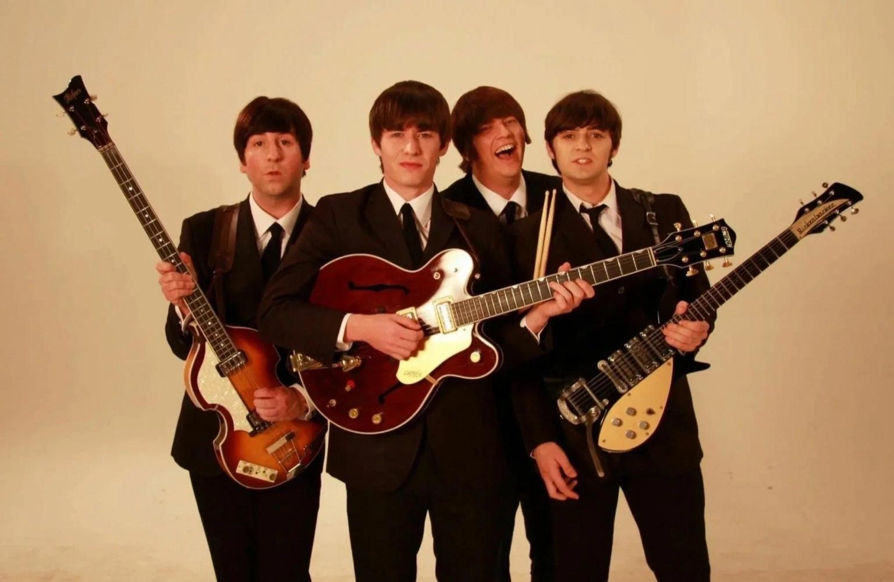
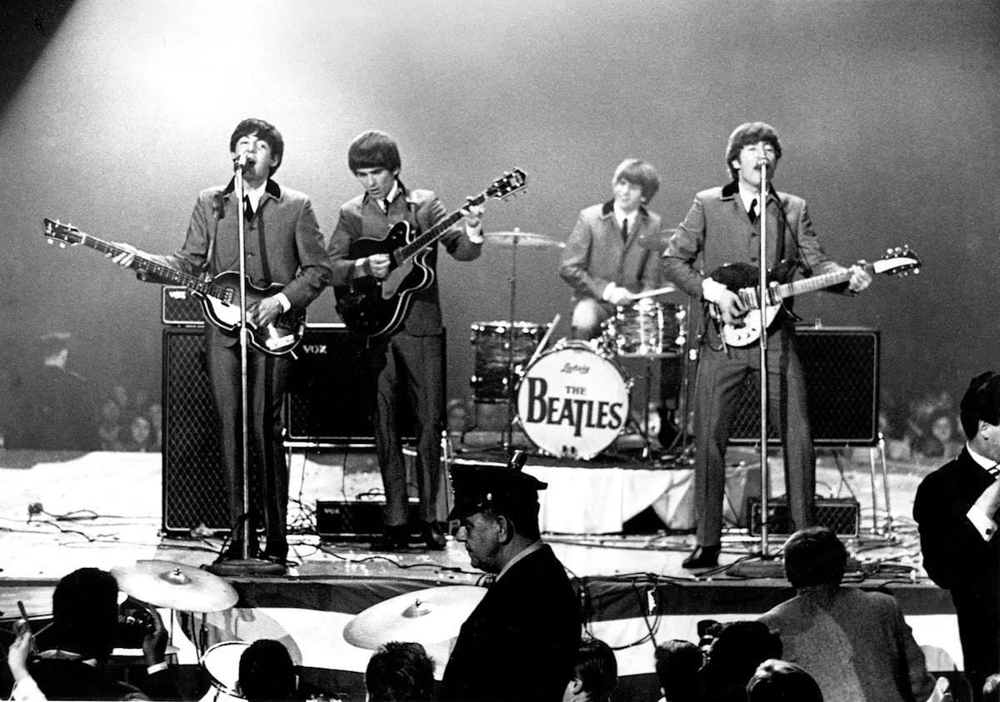

video / live
Фильмография
Фильмы, телевизионные проекты и видеопроекты с участием The Beatles —
от ранней бешеной славы до психоделики и студийных экспериментов.
| Год | Русское название | Оригинальное название | Афиша | Примечание |
|---|---|---|---|---|
| 1964 | Вечер трудного дня | A Hard Day’s Night |  | Х/ф |
| 1965 | На помощь! | Help! |

|
Х/ф |
| 1967 | Волшебное таинственное путешествие | Magical Mystery Tour |  | ТВ/видео |
| 1968 | Жёлтая подводная лодка | Yellow Submarine |

|
Анимация |
| 1970 | Пусть будет так | Let It Be |

|
Док. хроника распада |